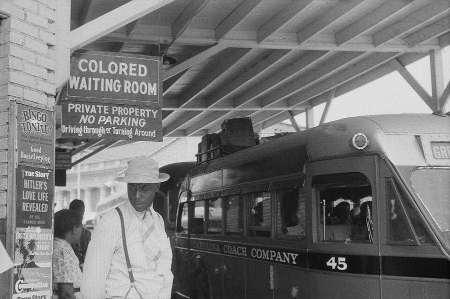
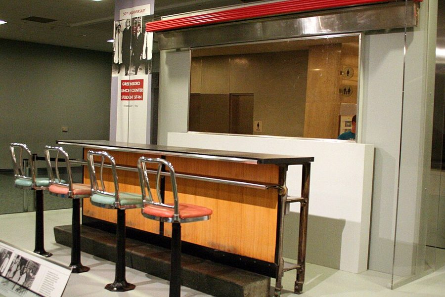
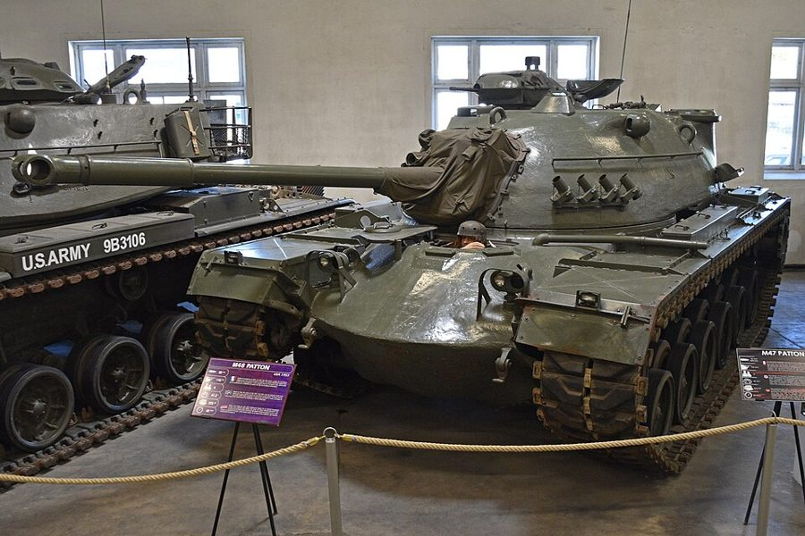
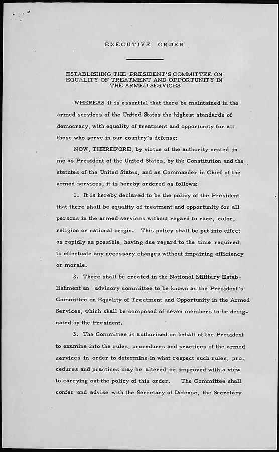
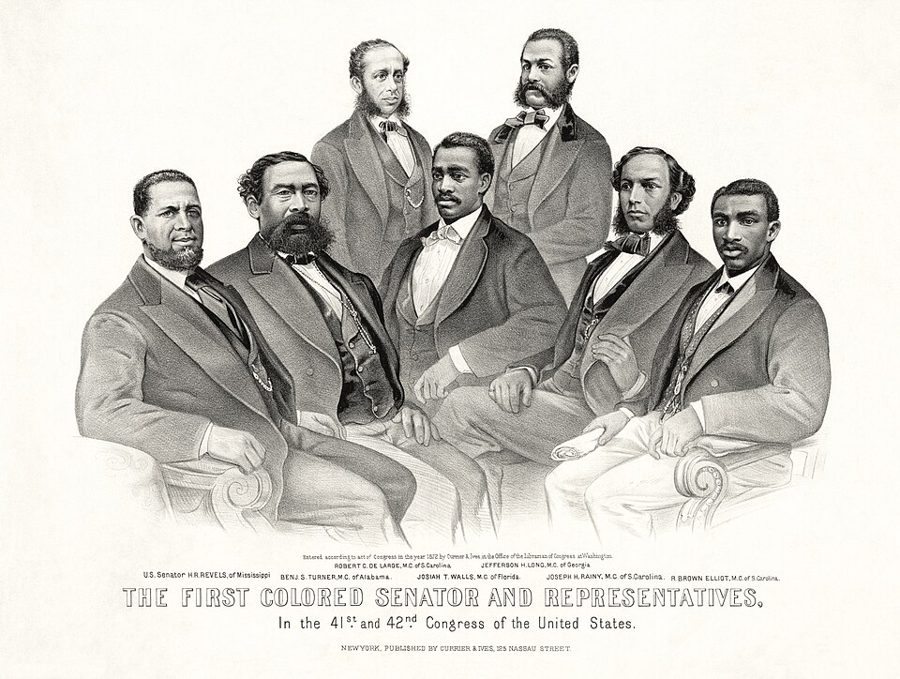

这一页在做什么
两年兵役的前半段：1959 年 8 月应征入伍，新兵训练后被改派到佐治亚的 Fort Stewart，一路上第一次碰到南方的 Jim Crow。在营里，他从修车场、伙房一路「搞砸」，到营部扫地，又当上了首席文书；同时闯隔离舞会，跟上司和白人兵较劲。读的时候抓两条线：他用什么办法对付歧视，哪些是抗议、哪些是他自己也承认的胡闹；以及他怎么在不给人抓把柄的边上走。

1940 年 5 月，北卡罗来纳州 Durham 的长途汽车站：「有色人种候车室」。摄影师 Jack Delano 为联邦政府农业安全局拍的。与本书无关，但第 8 段他在弗吉尼亚 Petersburg 车站隔着车窗看见的，就是这样的牌子。Jack Delano，公有领域，维基共享资源 读之前：这一页在他一生的哪里
上一页停在 1959 年初：他因为跟警察顶撞被判了罚款，正盘算着带 Connie 去洛杉矶，却接到了征兵通知。这一页从 1959 年 8 月入伍写到 1960 年 3 月申请调离南方。这几个月正是民权运动换挡的时候：1960 年 2 月 1 日，北卡罗来纳州 Greensboro 四个黑人大学生坐上只招待白人的午餐柜台，静坐很快传到南方各地（第 51 段）。

Greensboro 那家 Woolworth 店的一段午餐柜台，现在陈列在华盛顿的美国国家历史博物馆。照片摄于 2010 年。RadioFan，CC BY-SA 3.0，维基共享资源 读的时候带着这几个问题。不用先找答案，读完回来对照「检查一下理解」。
修车场和伙房的两次「搞砸」，他想达到什么目的？结果又得到了什么？§3
他说当上首席文书「纯属运气」。他给的理由是什么，你同意吗？§4
闯舞会、传话、拧灯泡、编偷坦克的「计划」：哪些冲着种族隔离去，哪些更像恶作剧？他事后怎么看自己？§5
几位黑人士兵说是「北方来的煽动者」在添乱。他们看到的南方，和作者看到的有什么不同？§5
分节地图
这一页是原书第 3 章的前五节（章首没有小标题，本站记作 §1）。粗体是这一节的地标；斜体是英文这一节开头的几个词，在 Kindle 里搜它就能跳到那里，错字照电子书原样。读完打个勾。
征兵入伍，Fort Jackson 的新兵连约 500 词 IN AUGUST 1959, WHEN I … 继父的一句话，班长被撤；第 6 段一封电报把他从弗吉尼亚改派到佐治亚。 南下的长途车，Hinesville 车站约 500 词 I left Philadelphia by bus … 第一次见到隔离的候车室；座位之争。留意他怎么交代自己吐舌头那一下。 报到，修车场和伙房约 600 词 “Private Williams reporting as ordered, … 连长 Smit 的第一印象；两次「搞砸」，留意他哪里说了是故意的。 营部扫地，接手首席文书约 500 词 At roll call the next … 几份打好的文件改了上司的看法；第 26 段学通了军法。 舞会、电话、灯泡、坦克约 2100 词 In those days, Fort Stewart held … 一连串跟隔离、跟白人兵的较劲；第 50–51 段是事后回看，最后是调离申请。
出场的人
按出场顺序。书里的家人、战友、上司只写书里说的；公众人物写生卒年。
Pops 作者的继父 第 1 段：二战时是技术军士（tech sergeant），作者应征时送了他那句「百万美元」的话。第 2 章出过场：母亲 1958 年嫁给他，作者叫他 Pops。
Mack Charles Parker 1936–1959，私刑的受害者 第 4 段：作者手下一个白人新兵拿他的死来叫板，说自己就是那个镇上的人。见「背景」。
Connie 作者的女友 第 2 章出过场。第 5、7 段：本来打算他驻弗吉尼亚时周末相聚，调令一改，两人都很难过。
Elroy F. Smit 上尉，作者所在的 H&S 连连长 第 13 段：作者是由宪兵陪着来报到的。第 28 段：闯舞会之后威胁要告他煽动暴乱，又软下来说了句「你知道这儿是怎么回事」，最后没告。
Harry S. Truman 1884–1972，美国总统（1945–1953） 杜鲁门。第 14 段：1948 年发布 9981 号行政令，取消军中的种族隔离。见「背景」。
Stepin Fetchit 1902–1985，演员，本名 Lincoln Perry 第 17 段：作者学这个银幕角色的腔调装傻。见「背景」。
营军士长 sergeant major，书里没写名字 第 22 段起：笑他不自量力，看了他打的文件改了主意，让他跟着快退伍的首席文书见习。第 31 段：作者当着监察长一行人向他传话。
Sergeant So-and-So 一个作战连的军士，作者忘了名字 第 29–32 段：打电话来，用侮辱黑人的字眼说有黑人司机、却派不出黑人士官去接舞会的女孩，后来被监察长一行里的军官叫去问话。
Blanche K. Bruce 1841–1898，密西西比州联邦参议员（1875–1881） 第 36 段：一位黑人士兵为了赢赌，拿来的证据之一，同时列了四位黑人众议员。见「背景」。
Lawrence Harvey 作者的战友 第 37 段：作者说黑人士兵里只有他成了好朋友。一起在电视前演戏、一起跟白人兵打架，一起编偷坦克的「计划」。
背景：作者默认你知道的事
按在书里出现的顺序排，标题前是节号。这里只讲事情本身，作者怎么看放在后面几节。
§1 和平年代的征兵1959 年的美国夹在朝鲜战争和越南战争之间，没在打仗，征兵（the draft）却一直没停：男子满 18 岁要做兵役登记，各地的征兵局按名额抽人。1955 年以后，被征召的人服两年现役，加上预备役，兵役义务一共六年（他的预备役在书里后面讲）。被征来的叫 inductee，第一站是八周的基本训练（basic training）。作者去的是南卡罗来纳州首府 Columbia 的 Fort Jackson，训练完再分派到各部队。第 8 段他说在南卡只出过两次营门，去的都是 Benedict College，那是 1870 年创办的黑人大学。
§1 Mack Charles Parker 和私刑私刑（lynching）是暴民不经审判把人处死，南方的受害者多是黑人。Mack Charles Parker 是密西西比州的黑人卡车司机，1959 年 4 月被控强奸一名白人妇女，关在 Poplarville 的县监狱里。开庭前三天，一伙人闯进监狱把他拖走，打伤后枪杀，十来天后尸体在 Pearl 河里被发现。联邦调查局查出了参与的人，大陪审团却没有起诉任何人。第 4 段那个白人新兵说的就是这件事，书里说是同一年早些时候。第 42 段作者不敢进城，怕的也是这个。
§2 车站里的 Jim Crow
费城（家）
Fort Eustis
原定，离家 4 小时
Petersburg
隔离的候车室（第 8 段）
Fort Jackson（南卡）
八周新兵训练，坐火车去
Savannah
隔离的厕所，座位之争（第 9–10 段）
Fort Stewart（Hinesville）
离家近 700 英里（第 7 段）
Savannah 到这里约 40 英里
本站示意图，位置只是大致的，不按比例。粗线是 1959 年 10 月他坐长途车南下的路；细线是去新兵营的火车；虚线是那封电报取消的原定去处。 南方各州从十九世纪末起立法，在学校、车厢、候车室、厕所、餐馆里把黑人和白人分开，统称 Jim Crow（名字来自十九世纪黑脸滑稽戏里的一个角色）。长途车跨州走，车站却归各州管。1960 年 12 月，最高法院在 Boynton v. Virginia 案里判定，为州际旅客服务的车站餐馆不能按种族隔离；1961 年 5 月起，「自由乘车者」（Freedom Riders）黑白同车南下去试，州际商务委员会随后下令，从 1961 年 11 月 1 日起撤掉车站的隔离标牌。作者 1959 年南下时，这些都还没发生。
§2 Fort Stewart 和「巴顿」坦克营
M48「巴顿」坦克，陈列在法国 Saumur 的坦克博物馆。M48 是五十年代美军的主力中型坦克。照片摄于 2022 年，与本书无关。Alan Wilson，CC BY-SA 2.0，维基共享资源 Fort Stewart 在佐治亚州东南部，1940 年为训练防空部队而建，以独立战争时当地的将领 Daniel Stewart 命名，大门在 Hinesville。从 Savannah 坐车过去，书里说是四十英里。作者分到的部队全称很长：第 32 装甲团第 3 中型坦克营的 H&S 连。番号里括号中的 Patton 多半是指这个营装备的「巴顿」系列坦克（五十年代美军的 M47、M48 都叫巴顿，以二战将领 George Patton 命名），不是说巴顿将军本人；番号为什么这样写，本站没查到出处。第 47 段他和朋友编偷坦克的「计划」，多半说的就是这种坦克。
§3 9981 号行政令：命令下了，十年以后
9981 号行政令的第一页，1948 年 7 月 26 日。Harry S. Truman，公有领域，维基共享资源 1948 年 7 月 26 日，杜鲁门签发 9981 号行政令：军中人人待遇和机会平等，不分种族、肤色、宗教和民族出身，「尽快」执行。陆军动作最慢，朝鲜战争缺兵才大批混编，最后一支全黑人部队到 1954 年才撤销。命令管的是军队内部；基地外的南方小镇照样实行 Jim Crow，国防部到 1963 年才正式着手管基地外的隔离。所以第 14 段说，命令下了十来年，许多黑人兵还在割草、打扫、帮厨；第 27 段基地自己的舞会也还分黑人之夜和白人之夜。
§3 Stepin FetchitStepin Fetchit 是演员 Lincoln Perry（1902–1985）的艺名，也是他在二三十年代好莱坞电影里演的那个角色：说话含混、动作慢吞吞、一副又懒又糊涂的样子的黑人仆役。他是第一个靠演戏挣到上百万美元的黑人演员，但这个形象一直被批评是在丑化黑人，名字后来成了「讨好白人的蠢笨黑人」的代称。第 17 段，作者就是用这种腔调管中尉叫 Boss，装作只会照字面执行命令。他自己的说法是「又一次装傻」。
§4 营部、首席文书和军事法庭
营部（battalion headquarters）
营长 · 营军士长（sergeant major）
首席文书（head clerk）：作者，§4 起
营是军事法庭的
召集机关（第 26 段）
H&S 连
连长 Smit 上尉
作者的编制和营房在这里
A 连
B 连
C 连
D 连
作战连（line companies）
打电话的那位军士在其中一个连
本站示意图，按第 12–13、26、29 段画。虚线：他的编制在 H&S 连，归 Smit 管；上班却在营部，给营长和营军士长做事。 陆军的营（battalion）由几个连（company）组成。营部管全营的文书和命令，首席文书（head clerk）要打字、接电话、起草和下发命令（cutting orders）。军事法庭由有权的指挥官「召集」（convene），这一级就叫 convening authority；作者的营是 Fort Stewart 的召集机关，他当书记员（court recorder），整理审判记录。1951 年 5 月起，三军共用一部《统一军事司法法典》（Uniform Code of Military Justice，UCMJ），取代了此前各军种自己的军法。第 26 段他说这些知识「后来派上了用场」。
§5 重建时期的黑人议员
Currier & Ives 1872 年的石印画：第一位黑人参议员（左一 Hiram Revels，书里没提）和六位黑人众议员，最右边是书里点名的 Robert Elliott。Currier and Ives，公有领域，维基共享资源 南北战争后的重建时期（Reconstruction，1865–1877），南方的黑人男子有了选举权，南方各州选出过黑人国会议员。Blanche K. Bruce 1875–1881 年任密西西比州参议员，是第一位任满一届的黑人参议员；Richard Cain、Robert Elliott、Robert Smalls 是南卡罗来纳州的众议员；Henry Cheatham 是北卡罗来纳州的众议员，任期 1889–1893 年，已在重建结束之后。联邦军队撤出南方后，各州用人头税、识字测验等办法把黑人挤出选举，1901 年以后近三十年，国会里一个黑人议员都没有。第 36 段作者说他读了十几年书，从没学到过这些人。
词与短语
你用 Kindle，单个生词长按就能查，这里只收词典帮不上的：每个词都认识、合起来不懂的说法，口语和俚语，那个年代的说法，反话。斜体小字是原句里连续的几个词，错字照电子书原样，搜它就能跳到那里。点「记下」收进词本。
§1 征兵入伍，Fort Jackson 的新兵连
a million-dollar experience
… experience that you wouldn't do again for …
值一百万美元、可给一百万也不想再来一遍的经历
继父的俏皮话，前半句说珍贵，后半句说苦。屏幕上 milliondollar 粘成了一个词。
an understatement
… That was, I'd later learn, an understatement …
说轻了
understatement 就是往轻里说：继父那句已经够狠，作者说实际比那还难熬。
inductee
… several of us inductees boarded a train …
应征入伍的新兵
induct 是「正式吸收入伍」，被征召的人入伍那一天叫 induction。
colored patronage
… The cashier selling tickets displayed a sign …
有色人种顾客的光顾
牌子原文在引号里，紧跟这几个词后面，意思是「本院不欢迎有色人种光顾」。colored 是当时对黑人的通行说法，今天不用。
politely relieved of that duty
… I was politely relieved of that duty …
客客气气地被撤了职
relieve sb of duty 是「解除某人的职务」，不是「减轻负担」。
he thought I needed a rest
… he thought I needed a rest …
说我该歇一歇了
撤职时的场面话。下一段作者说，他认为真正的原因是另一件事。
Negro
… like taking orders from a Negro …
黑人
当时的通行称呼，今天不用了。作者自己叙述一般写 black；这个词在书里多见于他引的六十年代文件和信。
had words
… We had words, and he shouted …
吵了起来
have words (with sb) 是吵嘴，不是「有话要说」。
took care of
… the town in Mississippi where …
（委婉说法）收拾掉，弄死
那个白人兵的原话在引号里，紧跟这几个词。take care of 平常是「照顾、处理」，这里指那场私刑。见「背景」。
a fair one
… words, I offered him a …
一对一的公平单挑
原文在引号里。作者自己解释了，是那时对徒手打架的说法；fair 指一对一、不带家伙。
a two-week leave
… I then had a two-week leave …
两周的假
leave 作名词是军人的休假。同一段的 get leave from the post 是「从驻地请到假」，post 是军营，不是邮局。
went out the window
… our plans went out the window, borne …
泡汤了
后面的 borne on a telegram 接着打比方：计划被一封电报「带着」扔出了窗外。
out of the picture
… so weekend visits home were out of …
不用想了，不可能了
figured small
… that disappointment figured small in the …
算不了什么
figure 作动词是「占分量」。跟后来在 Fort Stewart 等着他的事比，这点失望不值一提。
§2 南下的长途车，Hinesville 车站
lunch counter
… segregated bathroom but not the lunch counter …
午餐柜台
小饭馆、车站、杂货店里一排高脚凳的柜台，南方也分黑白。1960 年的静坐就是坐到这种柜台前（第 51 段）。
boy
… I'm sorry, boy; this seat is …
（对黑人男子的蔑称）小子
南方白人这样叫成年黑人男子，是把他当孩子、当下人。第 12 段治安官开口也是这个称呼。
in quite a huff
… She got up in quite a huff …
气呼呼地
back in her day
… have never happened back in her day …
在她那个年代
言下之意：从前黑人哪敢跟白人争座位。
almost-seatmate
… the woman who was my almost-seatmate, now …
差点成了我邻座的人
作者临时拼出来的词，带点挖苦。
sheriff
… shouted to a sheriff, who happened …
县治安官
美国县一级的执法长官，多由选举产生，不是城市里的警察局长。
the salutation
… of course with the salutation …
称呼
salutation 本是见面、写信时的正式称呼语。of course 是挖苦：不用猜，他张口就是那个 boy。
H&S Company
… my new unit: H&S Company, 3rd …
营部连（营部和勤务连）
作者在下一段把它展开成 Headquarters & Supply；军方的写法一般是 Headquarters and Service。见「背景」里的结构图。
Medium Tank Battalion (Patton)
… 3rd Medium Tank Battalion (Patton), 32nd Armor …
中型坦克营（多半指装备「巴顿」坦克）
Armor 在这里是「装甲兵（团）」。见「背景」。
§3 报到，修车场和伙房
reporting as ordered
… Private Williams reporting as ordered, sir …
奉命报到
军中报到的固定说法；report 在军队里是「报到」，这一节的小标题 Reporting In 也是这个意思。
the highpoint of our relationship
… became the highpoint of our relationship …
（两人关系的）最高点
反话：第一印象已经很糟，往后只会更糟。
KP
… such as grass cutting, sanitation, and KP …
伙房杂役
kitchen police 跟警察无关，是派到伙房削土豆、刷锅洗碗的勤务。
motor pool
… also assigned to the motor pool as …
车辆场，车队
pool 在这里是「共用的一批（车辆）」，不是水池。
two-and-a-half-ton truck
… ordered me to paint a two-and-a-half-ton truck …
两吨半卡车
军中俗称 deuce and a half（第 17 段），是美军的标准运输卡车。
That was all I needed.
… That was all I needed. I started …
我要的就是这一句
不是「我只需要这个」。对方吼了一声 Yes，正好给了他照字面胡来的由头。
in my best Southern Stepin Fetchit accent
… in my best Southern Stepin Fetchit accent …
尽力学着南方腔、Stepin Fetchit 那种腔调
in my best X 是「尽我所能地模仿 X」。后面那句故意写成土腔：de 是 the，Ah's 是 I'm。见「背景」。
played the stupid role
… Again, I played the stupid role …
装傻
作者明说是装的：他知道自己在干什么。
drew mess-hall duty
… Then I drew mess-hall duty …
被派到伙房干活
draw 是「抽到、轮到」，派活像抽签；mess hall 是部队食堂，不是「乱糟糟的大厅」。
You'd have had to be there
… You'd have had to be there to …
得亲眼看见才知道（有多好笑）
口语，说那场面描述不出来。
§4 营部扫地，接手首席文书
top sergeant
… the top sergeant dismissed the formation …
连军士长
口语，指连里最高的军士（first sergeant），不是「最好的军士」。
military hitch
… completing his military hitch and would …
服役期
hitch 口语里指一段服役期，本义是「拴、挂」。
sergeant major
… I asked the sergeant major if …
营军士长
营里级别最高的士官，管营部的日常事务。作者有时写成 sergeant-major。
cutting orders
… military orders, etc. I'm sure he …
起草、下发命令
原文 cutting 在引号里，紧挨着这几个词前面。cut orders 是军中说法，指打印、签发正式的命令文书。
understudy
… to work as an understudy …
见习的接班人
本是戏剧里的替补演员，这里指跟着前任学、准备接手。
sheer luck
… It was sheer luck-because the clerk …
纯属运气
不是客气话：他接着说了运气在哪：前任文书、营军士长和营长都是北方人，perhaps sympathetic（也许同情他）。
convening authority
… the convening authority for court-martial trials …
军事法庭的召集机关
有权决定开庭、组成法庭的一级指挥官。见「背景」。
something of a resource person
… something of a resource person for officers …
算得上半个顾问
something of a 是「称得上是」；resource person 是有问题就去问的人。
stand me in good stead
… would stand me in good stead later …
日后派上了大用场
§5 舞会、电话、灯泡、坦克
service club annex
… dances at the post's service club …
军人俱乐部的附楼
service club 是基地里给士兵休闲的俱乐部。屏幕上 annex-one 中间原是破折号（annex—one particular night），扫描成了连字符。
inciting to riot
… with charges of inciting to riot …
煽动暴乱（罪名）
of the proper grades
… were of the proper grades to attend …
军阶符合规定
grade 在军中指军阶等级，不是年级或分数。他的理由是：舞会是基地办的，他们的级别够得上。
You know how it is down here
… You know how it is down here …
你知道在这儿（南方）是怎么回事
down here 指南方。上尉不肯明说，作者偏要他说明白。
line companies
… and line companies A, B, C …
作战连
line 指一线作战部队，和营部、勤务相对。
left it at that, temporarily
… and left it at that, temporarily …
当时就没再说什么——暂时
temporarily 是伏笔，下一段他就当众把话转了。
inspector general
… accompanied the army's inspector general on …
（陆军）监察长
负责巡查部队纪律、士气和投诉的高级军官。
Sergeant So-and-So
… Sergeant So-and-So [I've forgotten his name] left …
某某军士
so-and-so 指说不上名字的人。方括号里是 2010 年的作者插的话。
Northern agitators
… it was Northern agitators like me who …
北方来的煽动者
当时南方反对民权运动的人常用的说法：本地黑人本来安分，是外地人来挑事。这里是几位黑人士兵在说。
on speaking terms
… While I was on speaking terms with …
见面说得上话（谈不上交情）
American Bandstand
… was a soldier favorite. Along with …
（电视节目）美国舞台
节目名在引号里，紧挨着这几个词前面。费城出的青少年舞蹈节目，见「对照今天」。
within full earshot of
… within full earshot of the other viewers …
让……都听得清清楚楚
earshot 是「听力所及的范围」。他是故意说给旁边的白人兵听的。
In all due respect, sir
… In all due respect, sir …
恕我直言，长官
通常说 with all due respect。字面是「怀着应有的敬意」，后面跟的多半是不中听的话。
non-coms
… not supposed to be used with …
士官
原文在引号里，紧跟这几个词。non-commissioned officers（NCO）的口语，即各级军士。按规矩 sir 只对军官说，他偏对军士也说。
without the hint of a smile
… statements without the hint of a smile …
一丝笑意都不露
英文常说 deadpan：板着脸说荒唐话，让对方摸不清他是不是当真。
St. Patrick's Day parade
… in a St. Patrick's Day parade in …
圣帕特里克节游行
3 月 17 日，爱尔兰裔的节日。Savannah 的游行从 1824 年办起，是美国规模最大的之一。他说对 Savannah 没好感，没说为什么；第 9 段他在那里用过隔离的厕所。
guide-on position
… in the so-called guide-on position …
排头兵的位置
guidon 是队列前举的小旗。作者自己解释了：队列右前方，全队照他对齐、踩步点。他故意踩错拍子、拐错弯，全队就乱了。
Or so I thought.
… charges against me. Or so I thought …
至少我当时是这么以为的
伏笔：事情没他想的那么简单。
peace deal
… the barracks sergeant negotiated a …
停战协议
原文在引号里。一本正经地借外交用语，说的是灯泡和收音机音量。
AWOL
… less likely to go AWOL …
擅离职守，开小差
absent without leave。灯泡闪一闪就不想家，是他说的那种不带笑的荒唐话。
livened up our fabrication
… We livened up our fabrication by arguing …
把编的故事说得更热闹
fabrication 是编造的东西。他们是说给偷听的军士听的。
CID
… the Army's Criminal Investigation Division …
陆军刑事调查处
军中的刑事侦查机构。作者说只是他们的猜测，从没弄清是不是 CID 在跟踪。
Okefenokee Swamp
… nearby Okefenokee Swamp as food for …
Okefenokee 大沼泽
佐治亚州东南部的大片沼泽，有鳄鱼。
ushered in
… civil rights movement was ushered in …
开启，迎来
usher 本是剧场的领座员，usher in 是「引进来」。
five-and-dime store
… Woolworth's five-and-dime store in Greensboro …
廉价杂货店
原指东西都卖五分、一毛的店。Woolworth 是当时最有名的连锁。
Deep South
… for reassignment out of the Deep South …
南方腹地
佐治亚、亚拉巴马、密西西比等最南边、隔离最严的几个州。这一章第 2 节的小标题也用了它。
permanent change of station
… granted a permanent change of station …
永久调换驻地
军中的说法，简称 PCS。这是 1960 年 3 月的他写的申请，满纸公文腔；书里照录了一段。
读不通的扫描错字：
… USA GARRISON (319o) FT STEWART … 和前面一行的 3190 是同一个番号。… offered to bet me $io, I … 应为 $10。… been 6 feet 51/2 inches tall … 应为 6 英尺 5½ 英寸，约 1.97 米。… Around 11:oo P.M., we would … 应为 11:00。
和 Sowell 的书对照
Sowell 的自传 A Personal Odyssey 和书信集 A Man of Letters 本站都有导读。同一件事两边都写过的，摆在一起；说法不一样的并排列出，不判谁对。老站页面没有能直接跳到的锚点，链接到页，正文里写明在哪一节。
回头看年轻时的莽撞（两人各自的事，不是同一件事）
这本书 作者回想在佐治亚军营里的种种挑衅，说想起当年有多不知轻重就几乎发抖：要害他、把尸体扔进沼泽并不难（§5 第 50 段）。
Letters 2003 年 4 月 2 日 Sowell 写给 Walter 的信：至今想起小时候、甚至成年以后干过的一些事还会打冷战。他举的是在哈莱姆两栋楼之间跳空当，带妻子 Mary 去看那道缝时，她吓得发抖。信里没说是回应 Walter 的什么话，也和军营无关。这封信在导读 05b 的「信件地图」里。Letters 导读 05b →
对照今天
书里能拿后来的数据和研究检验的说法。每张卡的标签判的是标题里那句「书里的说法」；「今天」一栏都联网核过，写了核对日期和依据。
成立 后来的数据和研究支持这个说法部分成立 一部分对，一部分要打折扣被改写 后来的事实推翻了它，或者完全变了样有争议 研究者至今看法不一书里的说法：那时黑人上不了 American Bandstand，至少上得不多
书里 作者说当时黑人不许上这个节目，至少人数不多（§5 第 38 段）。他在营房里就是拿节目里的白人女孩开涮，惹恼了南方白人兵。
当时（1959） 节目在费城 WFIL 电视台的演播室里做，本地的中学生来演播室跳舞；1957 年起由 ABC 电视网向全国播出，主持人是 Dick Clark。
今天 历史学家 Matthew Delmont 在 The Nicest Kids in Town（2012）里查了档案、访问了当事人，结论是：节目在费城的那些年（1964 年迁往洛杉矶之前）一直在排斥黑人青少年。没有明文禁令，而是用入场的办法等手段，让本地黑人孩子很少进得了演播室，上镜的更少。核对于 2026-10。依据：Delmont，The Nicest Kids in Town（加州大学出版社，2012）；Delmont 2012 年接受 Democracy Now! 的访谈；History News Network 上对这本书的评介。
另一边 Dick Clark 生前的说法是，节目在他手里实现了种族融合。Delmont 认为这个说法和留下来的记录对不上。
值得停下来的句子
Is somebody going to paint me black and send me to Georgia?— §5 第 34 段。本站译：难道还有人要把我涂黑，再发配到佐治亚来？
有人警告他再闹要吃大亏，这是他满不在乎的回嘴。笑点在于这两样惩罚他早就「受」过了：他本来就是黑人，人也已经在佐治亚。言下之意大概是：对一个北方来的黑人兵，被派到 1959 年的佐治亚已经够糟了，还能怎样。他自己说这话说得 flippantly（轻佻），这一页的口气大多如此。
Thinking back on those days, I almost shudder at the thought of how reckless I was.— §5 第 50 段。本站译：回想那些日子，一想到自己当年多么不知死活，我几乎要发抖。
前面二十几段都是得意的讲法，到这里换成七十四岁的人回头看。almost 留了分寸：他没说后悔，下一段还说一部分胡闹是那个时代激出来的。两种口气放在一起读，才是他对这段日子的完整态度。
检查一下理解
先在心里答，再点开。答错的那题，回书里把对应那一节再读一遍。
1.（§1）继父说当兵是「值一百万的经历」，后半句是什么？作者为什么说这话还说轻了？ 后半句是：给一百万也不想再来一遍。作者说他后来才明白，当兵比继父说的还难熬，这一页的南方军营就是开头。
2.（§1）他为什么被撤了班长？对方给的理由和他猜的理由各是什么？ 那位 specialist 说想让别的兵也试试，而且他该歇一歇了。作者认为真正的原因是他和一个密西西比来的白人兵起了冲突、还提出单挑，被连里的一位军士看见了，多半是那位军士让撤的。
3.（§3）他把整辆卡车连车窗带轮胎都刷了漆，是听错了命令吗？ 不是。他知道军士只要刷车斗，故意问「整辆？」，对方吼了一声 Yes，他就照字面办，还学 Stepin Fetchit 的腔调说自己只是照命令做。第二天冲坏两辆车的发动机，也是装傻。
4.（§4）一个在修车场和伙房都「搞砸」了的列兵，怎么当上了营部首席文书？ 他被派到营部扫地，听说首席文书快退伍，主动要这份差事。军士长让他试试，他打的几份文件又快又好，还改了原件的错，于是先见习、再接班。他自己说是纯运气：前任文书、军士长和营长都是北方人，也许同情他。
5.（§5）那位军士的电话留言，他为什么没有马上转达？ 电话来时他只答了声 Yes, sir。等华盛顿来的监察长一行回到营部，他才当着大家的面，大声把那句带侮辱字眼的原话转给军士长。屋里一下没了声音，一位军官立刻把那位军士叫来问话。
6.（§5）灯泡那件事最后怎么收场？他对军士说的理由该怎么读？ 营房军士出面「讲和」：白人兵把收音机关小、不再偷他的灯泡，他也不再制造杂音。他说灯泡一闪一闪让他不那么想家、不容易开小差，是一本正经的胡说。
7.（§5）1960 年 3 月 5 日他递的申请要什么？结果如何？ 申请永久调离南方，按顺序列了新泽西、费城和马里兰的几处军事单位，附了半页材料讲他在 Fort Stewart 碰到的种族问题。申请被驳回。
用一句话说这一页，写给一个没读过的人。
读完想一想
他在南方军营里的一连串挑衅，是有用的抗议，还是拿命冒险的任性？换成你，被派到 1959 年的佐治亚，会怎么做？
几种看法 作者自己（第 50–51 段）：那是二十三岁不知轻重，一部分也是被那个时代激起来的；他没说这些举动起了多大作用，舞会后来取消了，他也没说是因为他的信。同一时期民权运动的主流走的是另一条路：Greensboro 的学生和马丁·路德·金（Martin Luther King Jr.）一派讲非暴力和纪律，靠让旁观者看清是非。还有一种读法：在军营里，他的护身符是不给人抓到把柄，「服从命令，但不照对方的意思办」本身就是一套策略。
几位黑人士兵说，南方黑人过得还行，是北方来的煽动者在添乱。他们为什么这样看？他们说的有没有道理？
几种看法 作者当时觉得不可思议（第 35 段）。一种理解：他们在南方有自己的生意、房子、教堂，学会了在规矩里过日子，外来的人闹完一走了之，后果要本地人担。另一种：这是长期压迫下的自保。民权运动内部对抗议该多激进也一直有争论。还可以留意：正是这位南方士兵把重建时期黑人议员的事告诉了他，在历史上，他比北方来的作者知道得多。
他读了十几年书，从没学到重建时期南方出过黑人议员。你上学时的历史课，有没有这样的空白？是怎么发现的？
几种看法 作者在第 36 段只说他没学到，没说为什么。美国史学界一般认为，二十世纪上半叶流行的重建史（以 William Dunning 为代表的「Dunning 学派」）把重建写成一场腐败闹剧，黑人议员要么不提、要么丑化；五六十年代以后的研究才改写了这段历史。
精彩回顾
读过又忘了，从这里想起来。挑的是这一页最值得记住的人、场面和说法，不按原书顺序；每条后面是节号，想细看就回书里那一节。全书各页的这一节都收在全书回顾 。
一句话： 一个北方来的黑人列兵在佐治亚军营里：不肯顺从，又不给人抓把柄，从杂役干到了营部首席文书。
「整辆都刷？」 军士叫他刷卡车，他故意问整辆？对方吼了声 Yes，他就连车窗带轮胎一起刷，还学 Stepin Fetchit 的腔调说是照命令办。
§3 从扫地到首席文书 被伙房赶出来后在营部扫地，主动要了首席文书的差事。他成了营里第一个黑人首席文书，还学通了军法。
§4 当着监察长传话 一位军士在电话里用侮辱黑人的字眼说派不出黑人士官；他等华盛顿来的军官都在屋里，才大声复述，那位军士被叫去问话。
§5 涂黑了送去佐治亚？ 有人警告他要惹大麻烦，他回嘴：难道有人要把我涂黑、发配到佐治亚来？
§5 一闪一闪的灯泡 他把床头灯泡拧松制造杂音，干扰白人兵听乡村音乐；最后营房军士出面「讲和」。
§5 十美元的赌 一位黑人士兵说南方出过黑人议员，他不信，打了十美元的赌。对方拿出 Bruce 等人的名字，他目瞪口呆。
§5